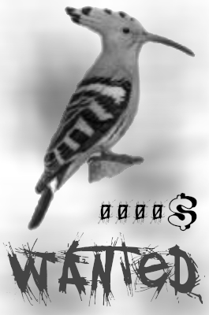

6795 observateurs, répartis dans les 10 départements de la région Grand Est,
ont réalisé 552 180 signalements d'oiseaux entre le 1er janvier 2012 et le 31 décembre 2022.
Parmi ces observateurs, seuls 25 ont eu la chance de voir la huppe fasciée
espèce la plus rare(*) au sein des 52 espèces présentes dans le jeu de données.

Sur cette carte, la région Grand-Est a été découpée par une grille de carrés de 10km de côtés. Les données d'observations
ont été agrégées par carré.
Les carrés en gris représentent des zones où aucune observation n'a été réalisée entre 2012 et 2022.
La taille des points violets indique le nombre d'observations réalisé sur la période. Les ronds cerclés de rouge
indiquent que plus de 50 espèces ou plus ont été observées dans le carré. Ce sont de bons "spots".
Le survol de la grille par la souris permet d'obtenir des informations supplémentaires. En décochant la couche 'grille'
en haut à droite de la carte, l'infobulle n'apparaît plus au survol de la carte. Enfin, Le plan IGN est affichable pour
aider à la localisation, son opacité est réglable grâce au curseur situé sous le nom de la couche.
Ce graphique se propose de montrer les périodes de présence et d'absence au cours de l'année
de 52 espèces d'oiseaux en région Grand-Est.
Un clic sur les noms des espèces dans la légende, permet
d'ajouter ou de retirer leurs données du graphique, le passage de la souris au dessus des points
du graphique permet d'obtenir des informations supplémentaires.
Parmi les nombreux observateurs ayant permis de constituer cette base de données, certains se distinguent par
leur persévérence.
J'ai donc décidé, à l'unanimité, d'attribuer des
cuicuis d'or à ces zélés serviteurs
de la cause ornithologique.
| Cuicui d'or d'or 🐤 | M/Mme Observateur 20 Haut-Rhin 19 099 observations 51 espèces observées en 11 ans |
|
|---|---|---|
| Cuicui d'or d'argent 🕊️ | Mme/M Observateur 29 Moselle 12 850 observations 46 espèces observées en 10 ans |
|
| Cuicui d'or de bronze 🦉 | Mme/Mw Observateur 13 12 412 observations 50 espèces observées en 10 ans |